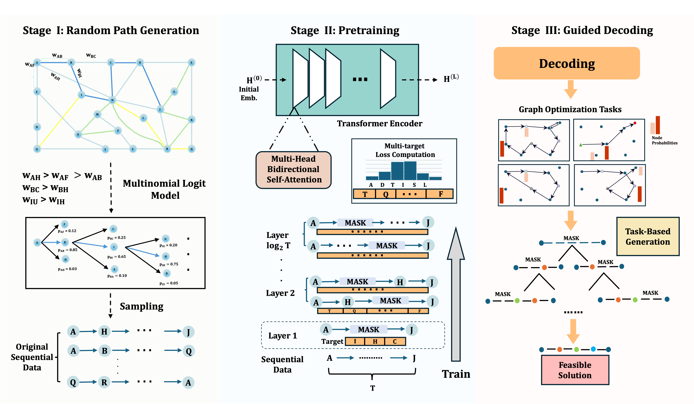

A pretrain-transfer framework for graph optimization. GOFM internalizes network topology by encoding structure-aware random walks into a Transformer through progressive masked reconstruction. At inference, a single pretrained backbone facilitates SP, TSP, CVRP, Community Detection, and Influence Maximization via lightweight constrained decoding — no retraining required.
- Self-supervised pretraining on graph structure via structure-aware random walks
- Supports SP, TSP, CVRP, Community Detection & Influence Maximization
- Amazon Last Mile real-world case study — 24.5% distance reduction
- Near-perfect feasibility on city-scale sparse networks
 Full Project Page →
arXiv Paper →
Full Project Page →
arXiv Paper →
Building a game-theoretic multi-agent framework to study cooperation among LLM-based agents.
- Sequential Public Goods Game with belief updating and conditional cooperation
- Subgame Perfect Nash Equilibrium analysis under full vs. partial observability
- Mechanism design for incentive alignment
Optimizing UAV paths for agricultural data collection:
- DARP & MST algorithms
- Data transmission optimization
- Automated decision-making
Building a multimodal LLM pipeline to convert images (forms, handwriting) into structured text:
- Prompt engineering and fine-tuning for Pix2Text / Pix2Struct
- Mini Program interface; backend in progress
- Focus on accuracy in unstructured data
Analyzing Smart City Pilot Plan impact:
- Multi-period DID model
- 296 cities study
- 20-year data analysis
Full-stack music streaming platform:
- Spring Boot backend
- Vue.js frontend
- MySQL optimization
Hospital transfusion simulation:
- Simio modeling
- Kenyan hospitals study
- UPMC collaboration